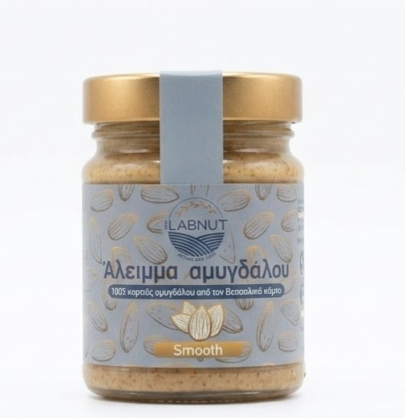
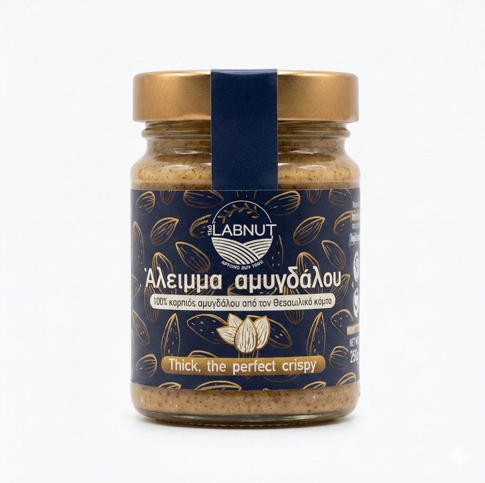
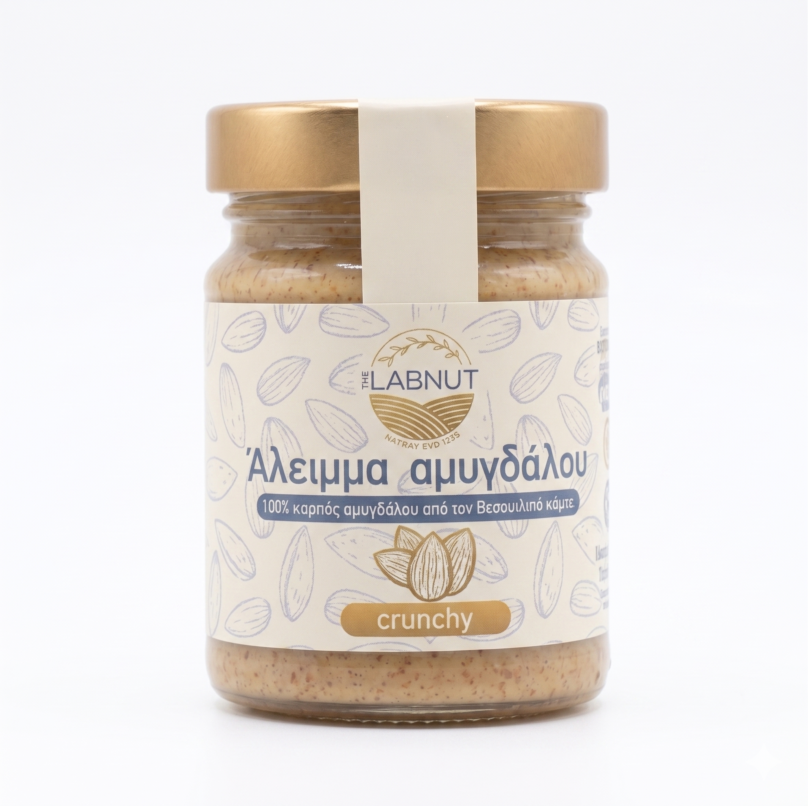
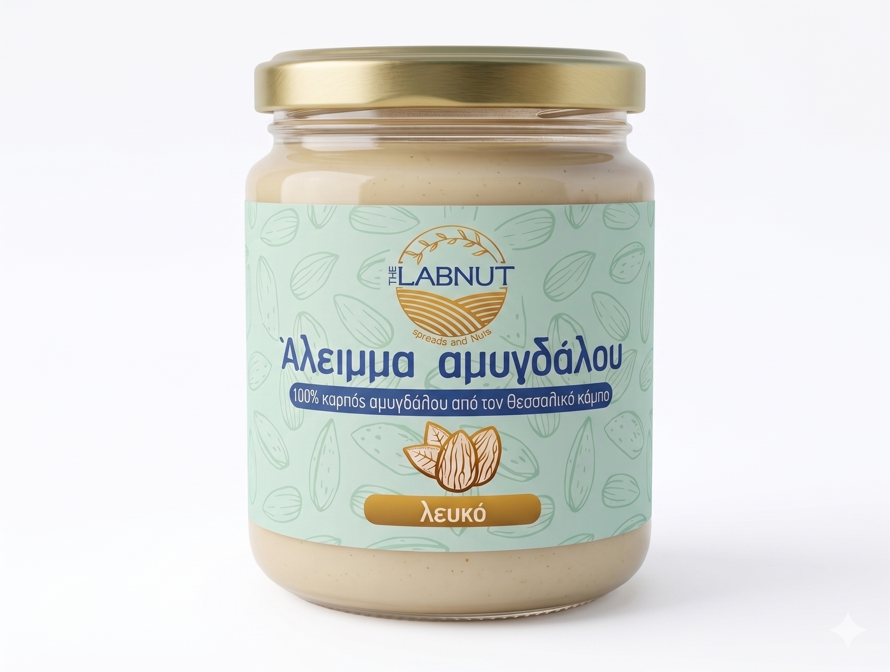

Ανακαλύψτε τις 4 Υφές του The Labnut
Κάθε βάζο μας κλείνει μέσα του 100% αγνό ελληνικό αμύγδαλο, χωρίς καμία πρόσμιξη. Βρείτε την υφή που σας ταιριάζει!
1. The Labnut Smooth

Υφή: Ρευστή & Λεία (Ολικής Άλεσης)
Η κλασική μας συνταγή. Τα αμύγδαλα αλέθονται με τον φλοιό τους μέχρι να δημιουργηθεί ένα μεταξένιο άλειμμα.
2. The Labnut Thick

Υφή: Πλούσια & Πηχτή (Ολικής Άλεσης)
Για όσους αγαπούν ένα πιο σταθερό άλειμμα. Έχει "σώμα" και δεν ρέει εύκολα.
3. The Labnut Crunchy

Υφή: Ρευστή με τραγανά κομμάτια (Ολικής Άλεσης)
Ο τέλειος συνδυασμός. Η απαλή ρευστή βάση μας συναντά διαλεχτά, καβουρδισμένα κομμάτια αμυγδάλου.
4. The Labnut Λευκό (White)

Υφή: Βελούδινη (Από αποφλοιωμένα αμύγδαλα)
Η πιο εκλεπτυσμένη μας γεύση. Παράγεται αποκλειστικά από αμύγδαλα χωρίς το φλούδι τους.